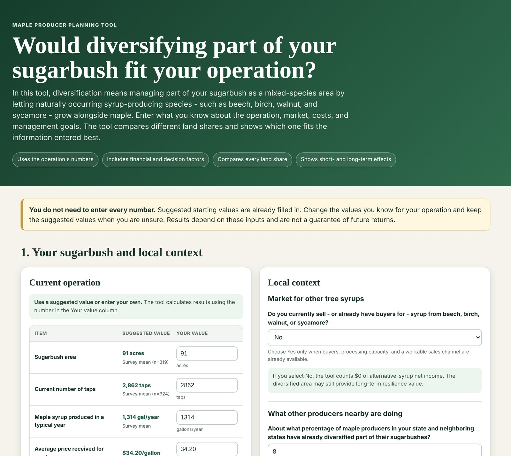
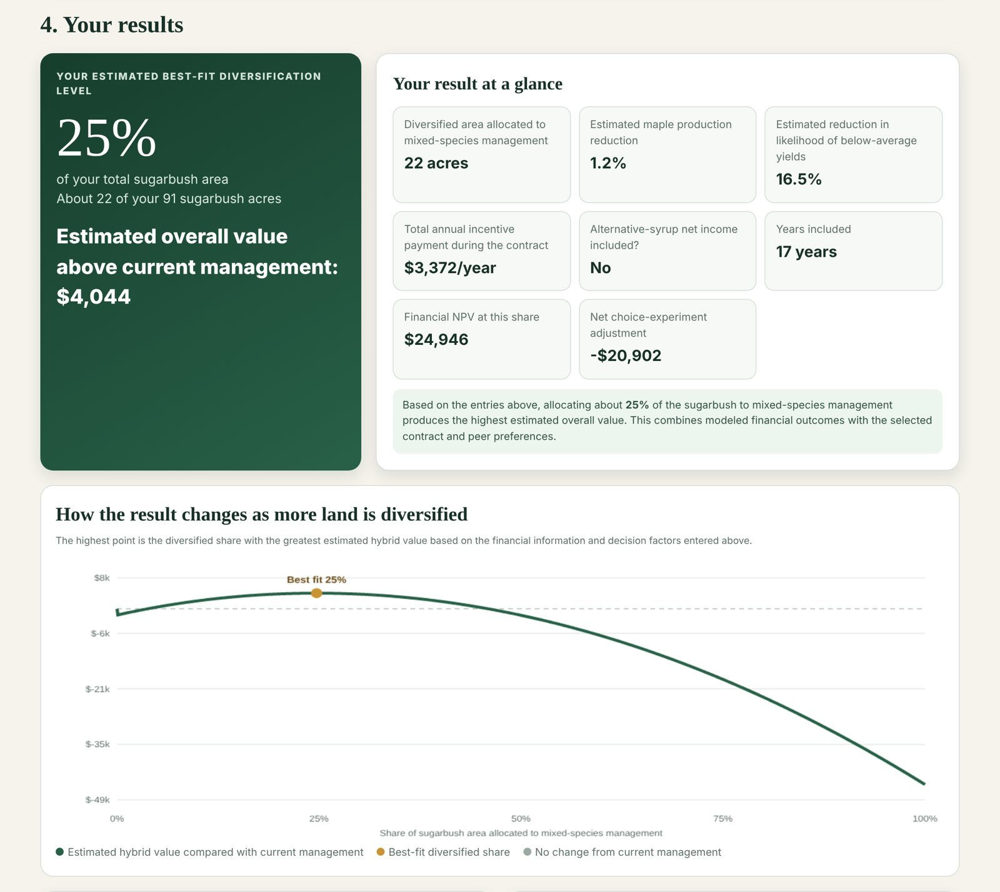

Agroforestry for Conservation and Recreation Workshop
Information booth · Monticello, IL · 2025
This interactive decision tool helps maple syrup producers assess whether species diversification in their sugarbush fits their operation and, if so, at what level of diversification intensity. It combines financial cost-benefit analysis with producer preferences estimated from a choice experiment, starting from survey-based default values that producers replace with their own operation, market, and planning-horizon information. The tool supports both self-guided use and consultations with extension educators and foresters.


Information booth · Monticello, IL · 2025
Facilitator, 4 farmers · Urbana, IL · 2025
Information booth · Dixon Springs, IL · 2025
Information booth · Sturbridge, MA · 2023